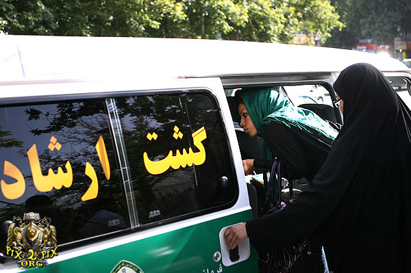

پذيرش > سایت نوشته ها > تاملی بر ارتباط تن فروشی و بد حجابی / فرافکنی به سبک ایرانی


 تاملی بر ارتباط تن فروشی و بد حجابی / فرافکنی به سبک ایرانی تاملی بر ارتباط تن فروشی و بد حجابی / فرافکنی به سبک ایرانی
27 تیر 1390 - محمد معماری - نسخه قابل چاپ
با آغاز فصل گرما؛ مطابق عرف سالهای گذشته امسال نیز برخورد و مبارزه با آنچه که در ادبیات رسمی حکومتی ایران تحت عنوان «بد حجابی » نامیده می شود آغاز گردیده است. شیوه ای که قدمتی به درازای تاریخ تاسیس حکومت جمهوری اسلامی دارد و با اجباری شدن حجاب در اوایل دهه شصت شکل سیستماتیک نیز به خود گرفته است.ابعاد این پدیده چنان وسیع و چند بعدی است که همه ی آنها را در ذیل یک نوشتار نمی توان پوشش داد و لا جرم این متن نیز چنین نیتی را نخواهد داشت.علاوه بر این پدیده موسوم به بدحجابی آنچنان در ذات خود پیچیده و در عین حال دم دستی و ساده است که تحلیل جنبه های مختلف آن نیازمند تخصصی جداگانه است. مثلا اگر بی حجابی در فضای عمومی یک جرم تعریف شده با حدود و ثغور و کیفر مشخص در قانون است در همان حال بدحجابی هیچگونه تصویر روشن قانونی ندارد و لا جرم مبنای تشخیص آن سلیقه ی شخصی هر فردی است که مامور به کار شده است.
شاید ذکر این نکته جالب باشد که بنا به نقل قول های بانوان دهه شصتی در ان زمان هر نوع پوششی غیر از لباس سیاه مصداق بدحجابی به شمار می رفت در حالی که امروز بدحجابی تفسیری به غایت متفاوت با آن دوران دارد.بنابراین حتی تعاریف و شیوه های برخورد با این پدیده به لحاظ ماهیتی نیز دچار تناقض های آشکار است.اما آنچه که این نوشتار سعی در واکاوی آن دارد بعدی از قضیه است که بنظر می رسد کمتر مورد توجه قرار گرفته است.
ظاهرا نوعی تغییر عامدانه در تفسیر و تحلیل بدحجابی از تریبون های رسمی حکومتی در یکی دو سال گذشته در حال شکل گیری بوده است.نگاهی به گفتارها و تبیین های صورت گرفته از سوی روحانیون سنتی و محافظه کار و حتی تریبون های نظامی امنیتی نشان می دهد که نوعی رهیافت سیستماتیک در حال اجراست تا گفتمان ی را نهادینه کند که در آن حجاب مترادف عفاف معنی شود و لاجرم بدحجابی ملازم بی عفتی و فحشا تفسیر گردد.تاکیدی که بر همراهی دو واژه حجاب و عفاف و بدحجابی و فحشا در ادبیات حاکم بر تریبون های مذهبی حکومتی می شود گواه این مدعاست.
اکنون پرسش این است که آیا این ملازمت تا چه اندازه می تواند تصویرگر واقعیت جامعه ای باشد که بدحجابی یکی از نشانه های آشکار آن است.
برای تبیین مساله بهتر است با دو پرسش صریح شروع کنیم.آیا آنان که بنا به تشخیص مراجع قضایی و نظامی مصداق بدحجاب را شامل می شوند فاحشه اند ؟ و آیا فاحشه ها زنانی الزاما بدحجابند؟
اگر فرض کنیم که منظور از فحشا و هرزه گی در ادبیات حکومتی پدیده روسپیگری است می توان در پاسخ مثبت به پرسشهای فوق کاملا تردید روا داشت یعمی بر ملازمت فحشا و بدحجابی کاملا تشکیک کرد.بر خلاف آنچه که سعی دارد بدحجابی را علت و سبب ساز روسپیگری در جامعه معرفی کند سیمای واقعیت را باید از کانالهایی دیگر به نظاره نشست.ذکر این نکته ضروری است که بر خلاف سالهای گذشته که پدیده تن فروشی در ایران همیشه انکار می شد اکنون دیگر آنچنان این بحران انسانی گسترش یافته است که دیگر امکان انکار آن نیز وجود ندارد چنانکه به نظر می رسد نسبت دادن این موضوع به مساله بدحجابی نوعی فرار از واقعیت و فرافکنی حقیقت است.
در حالی که تن فروشی به هر عنوان و با هر قصدی در کلان شهرها در حال گسترش فاجعه آمیز است طرح این پرسش می تواند راهگشا باشد که اگر به فرض پوشش اسلامی مطابق قراعت حاکمیت در سطح جامعه فراگیر گردد دیگر با پدیده عرضه و تقاضای تن مواجه نخواهیم بود؟
برای پاسخ به این پرسش نمونه ای عینی و کم نظیر وجود دارد.شهر قم.قم شهری است که به لحاظ بافت جمعیتی و تاریخی و الگوهای هنجاری نمی توان آنچه را که بد حجابی نامیده می شود در مقایسه با سایر نقاط ایران مشاهده کرد.ابن در حالی ست که این شهر به لحاظ پدیده روسپیگری حتی از دید آمار خود حکومت نیز جایگاه اسف باری دارد.بنابراین بر مبنای این مثال نقض مشخص می شود که تلقین چنین ملازمتی چقدر دور از واقع می باشد.
این پرسش مطرح می شود که اولا دلیل و علت روسپیگری و فحشا سازمان یافته کدام عوامل است و ثانیا چه دلیلی وجود دارد که عنوان شود ریشه فحشا بدحجابی و شاخصه ی عفاف حجاب است؟
آنچه که به عنوان ریشه اصلی و علت بنیادی روسپیگری در جهان شناخته می شود در بطن مسائل اقتصادی قابل تحلیل است.بدون تردید و بر مبنای پژوهش های میدانی و مستند حوزه ی اقتصاد فقر، معضلات اقتصادی و عدم تامین معیشت اولیه که در سطوح فقر مطلق طبقه بندی می شود عامل فحشا در جهان است.غیر از موارد استثنایی که در چهارچوب الگوهای روان شناختی قابل تحلیل است نیاز مالی عاملی است که زنان را به مراکز فحشا سوق می دهد.برای تبیین بهتر مساله مثالی در گستره ی جهانی می تواند یاری رسان باشد.در برخی از کشورهای متمول اروپای شمال غربی که روسپیگری در آن قانونی است نظیر کشور آلمان و یا ایتالیا ، زنان و دختران جوانی که در مراکز فحشا به کار گمارده می شوند غالبا ملیتی غیر آلمانی و ایتالیایی دارند و معمولا از کشورهای بلوک شرق نظیر بلغارستان و رومانی به این کشورها مهاجرت یا قاچاق شده اند.کشورهایی که در مقایسه با حوزه کشوهای اروپای غربی از سطح رفاه و معیشت بسیار نازل تری برخوردارند.حتی در کشورهای عربی و آسای جنوب شرقی نیز این قانون نانوشته حاکم است.دبی که در کنار امر تجارت به جریان سکس توریسم هم بسیار بها می دهد شاغلین در مراکز فحشا را غالبا از کشورهای فقیرتر عربی و آفریقایی جذب می کند و در آنها زنان اماراتی و عربستانی تقریبا حضور ندارند.حکایت تایلند نیز در خاور دور از این قاعده مستثنا نیست.
بنابراین در بررسی علل معضل روسپیگری که به شکل آبرومندانه ای در ادبیات رسانه ای ایران به عنوان فحشا ترجمه شده است یقینا فقر اقتصادی مهمترین عامل است و بی تردید ایران نیز از این قاعده مستثنا نیست.اگرچه در ایران هیچ نهاد رسمی متولی مساله تن فروشی و پیشگیری از آن وجود ندارد و حتی سعی می شود که تا حد ممکن وجود آن نیز انکار شود اما با این وجود آنچه که از بطن جامعه بر می آید نیاز شدید مالی زنان موسوم به زنان خیابانی است که آنان را به سمت تن فروشی سوق می دهد.نمونه ی عینی آن قتلهای زنجیره ای زنان خیابانی در مشهد در دهه گذشته بود که بررسی شرایط زندگی زنان قربانی آن جنایات نشان می داد که همگی آنان از قشر فرودست اقتصادی جامعه بودند که به ناچار تن به تن فروشی می دادند.به عنوان نکته ای حاشیه ای باید تاکید نمایم که بر مبنای اصول اخلاقی هرگز نمی توان فقر را مجوزی برای تن فروشی به حساب آورد چنانچه زنان بسیاری هستند که در همین جامعه در ناعادلانه ترین و دشوارترین شرایط کاری حرمت انسانی خود را حفظ می کنند اما با این وجود نمی توان منکر این قضیه شد که در صورت تامین مالی این زنان خیابانی قطعا آمار چنین پدیده ی غیر انسانی تا حد بسیاری کاهش خواهد یافت.
حال با این تفاسیر می توان پرسید که آنانکه فحشا را به بدحجابی پیوند می زنند براستی نمی دانند که ریشه روسپیگری که آنان اکثرا مترادف هرزه گی بکار می برندش مصائب اقتصادی طبقه ی فرودست جامعه است نه تمرد از پوشش دلخواه حکومتی؟
به نظر می رسد آنقدر این مساله عیان و اظهر من الشمس است که اصلا نمی توان در بنیان آن تردید روا داشت. اما اینکه چرا چنین موضوع ملموس و کتمان ناپذیری مورد اغفال و انکار قرار می گیرد ریشه در جای دیگری دارد.اگر پذیرفته شود که ریشه تن فروشی زنان خیابانی در جامعه اسلامی ایران مشکلات اقتصادی این طیف از زنان است لاجرم متولیان امر باید پاسخگو باشند که چرا با حمایت مالی از این زنان سعی در ریشه کنی پدیده غیر انسانی تن فروشی صورت نمی گیرد؟پرسشی که می تواند بسیاری از مسولان را به بی کفایتی متهم کند.آیا اگر اقرار گردد که بسیاری از این زنان تن به بستری نامشروع می دهند تنها به این دلیل که بتوانند شکم فرزندانشان را سیر کنند آیا بسیاری از بذل و بخشش ها و حیف و میل های نظام نمی تواند زیر محاق پرسش روند؟آیا آنچه که دولت عدالت محور نامیده می شود می تواند با رواج پدیده تن فروشی به علت مشکلات معیشتی همخوانی داشته باشد؟آیا نمی توان سوال کرد که با وجود دستگاههای عریض و طویل حمایتی از اقشار آسیب پذیر چرا این پدیده نحس هر روز در حال فزونی است؟یا حتی از منظری دیگر چرا مجال و مکانی مهییا نمی شود تا این افراد آسیب پذیر در آن به کار و تولید مشغول شوند تا شان انسانی شان نیز حفظ گردد.
بنابراین اگر پذیرفته شود که ریشه به تعبیر خودشان فحشا فقر اقتصادی جامعه کنونی است همه این پرسشها و تردیدها مجال بروز خواهند یافت.
در حالی که می توان در آنسوی ماجرا بسیار ساده و با وجدان راحت فحشا را به بدحجابی پیوند زد و با نهایت آرامش و اعتماد به نفس بیان داشت که ایران تنها کشوری در جهان است که هیچ کس در آن شب گرسنه سر بر بالین نمی گذارد اما هرگز نیندیشید که گاه هزینه هایی که برای این نان سر سفره پرداخت می شود تکه هایی از کرامت انسانی زنانی است که هر روز و شب در پستوهای این فلات کهن دود می شود و به هوا می رود.
کانون زنان ایرانی
ارسال به
بالاترین
،
توییتر
،
فریندفید
،
فیسبوک
در همين بخش :
 یک خبر تلخ؟ یک قانونشکنی؟ یک تصمیم بخشنامهای جدید؟ یک خبر تلخ؟ یک قانونشکنی؟ یک تصمیم بخشنامهای جدید؟
چرا بایست به سکسوالیته پرداخت؟ / نفیسه آزاد
آزارجنسی خانگی؛ «قربانی» نه، «نجات یافته»
زنان، بزرگترین بازندگان بهار عرب
سانسور از دیدگاه جنسیتی/الهه امانی
ديگر بخش ها :
طرح یک میلیون امضا
|
مقالات
|
سایت نوشته ها
|
اخبار
|
گزارش كمپين
|
گفت و گو
|
علیه سکوت
|
كوچه به كوچه
|
نامه های شما
|
گزارش ویژه
|
گفتگو با اعضا
|
ویژه سالگرد کمپین
|
تصویر برابری
|
دل آرام علی
|
تریبون
|
مقالات
|
تاریخ شفاهی
|
خارج از چارچوب
|
کتابخانه
|
درباره کمپین
|
کمپین در شهرها
|
کمپین در بند
|
صدای تغییر
|
ویژه 22 خرداد
|
لایحه حمایت از خانواده
|
گالری
|
عشا مومنی
|
امیر یعقوبعلی
|
خدیجه مقدم
|
راحله عسگری زاده و نسیم خسروی
|
پروین اردلان،جلوه جواهری، مریم حسین خواه، ناهید کشاورز
|
زینب پیغمبرزاده
|
سعیده امین، سارا ایمانیان، محبوبه حسین زاده، ناهید کشاورز و همایون نامی
|
احترام شادفر
|
نسیم سرابندی زاده،فاطمه دهدشتی
|
وبلاگ مهمان
|
پرونده خرم آباد
|
دستگیری ها
|
مریم مالک
|
پرستو اللهیاری
|
مهرنوش اعتمادی
|
سمیه رشیدی
|
Other Languages
|
همراهان
|
«فراخوان کمپین ده روز با بهاره هدایت»
| English
|